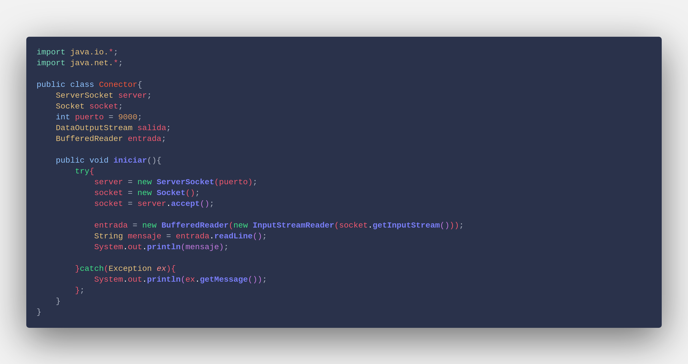

En la siguiente sección veremos como implementar una comunicación utilizando sockets creando un programa con el lenguaje Java, para el cual estaremos utilizando el modelo cliente-servidor.
Primero que nada crearemos un proyecto que contenga una clase llamada Conector. Una vez creada la clase vamos a importar los paquetes java.io y java.net que nos servirán para poder establecer las comunicaciones entre el cliente y el servidor. La estructura inicial de la clase debe quedar de la siguiente forma:
Ahora vamos a crear algunas variables principales, primero un objeto llamado server que representará el servidor de nuestra red, este será un objeto de tipo ServerSocket. El segundo objeto será el socket que se enviará en la comunicación, este objeto será de tipo Socket. Posteriormente creamos una variable de tipo entero llamado puerto, este número servirá para representar el puerto que se abrirá para poder compartir la información entre los equipos por lo que es importante que se utilice un número de un puerto que no esté ocupado en ese momento, en este caso se utilizará el puerto 9000. El cuarto objeto será de tipo DataOutputStream que nos servirá para almacenar la información que enviará nuestro cliente por el socket. Finalmente, creamos un objeto BufferedReader que guardará la información de respuesta del servidor para poder desplegarse en el cliente.
Ahora crearemos una función pública llamada iniciar que nos servirá para establecer la conexión entre nuestro cliente y el servidor, dentro de la función crearemos un try-catch con una excepción general para que en caso de tener un problema al intentar establecer la conexión nuestro programa pueda recibir información sobre el error.
Dentro del try-catch comenzaremos escribiendo toda la lógica que nos permitirá realizar la conexión. Para ello necesitaremos instanciar nuestro servidor y nuestro socket, es importante que al instanciar el servidor le pasemos como parámetro el puerto que definimos al principio. Una vez que tenemos las instancias correspondientes vamos a conectarlos igualando el socket a la función accept() del servidor.
A continuación definimos la información de entrada que tendrá nuestra información, como en este caso la información será un mensaje que enviará el cliente entonces definiremos el canal de entrada del socket utilizando la función getInputSream() para poder realizar el envío del mensaje y posteriormente imprimiremos el mensaje que se obtuvo en la entrada de la conexión.
Por último definiremos en la variable salida el canal de salida de nuestro socket y enviaremos un mensaje para confirmar que se ha recibido la información de entrada y finalmente cerraremos la conexión a través del método close().

Ya que tenemos toda nuestra lógica de comunicación creada vamos a correr el programa para ello necesitamos crear un método main debajo de la clase creada donde instanciaremos un objeto de la clase Conector y llamaremos a la función iniciar().
Ahora vamos a abrir dos ventanas de nuestra línea de comandos, una que servirá para ejecutar el programa que será el servidor y otra que servirá como nuestro cliente. En la ventana de nuestro sevidor ejecutaremos los siguientes comandos, es importante que al hacerlo estemos en la misma carpeta donde se encuentra nuestro programa.

En la ventana de nuestro cliente vamos a ejecutar el comando telnet seguido de nuestra dirección IP que como ahora estamos trabajando en un ámbito local entonces la dirección será 127.0.0.1 seguido del puerto que hayamos definido en nuestro programa, en este caso es 9000. Posteriormente insertaremos el mensaje que querramos enviar, en este ejemplo será "Envío de información".
Finalmente podemos apreciar como se pudieron enviar ambos mensajes a través del socket tanto del canal de entrada como del canal de salida y pudieron ser mostrados tanto por el servidor como por nuestro cliente.
A continuación dejamos un video que muestra una conexión de igual forma a través de un socket utilizando el modelo cliente-servidor pero ahora configurando el cliente para recibir y tratar la información del servidor.